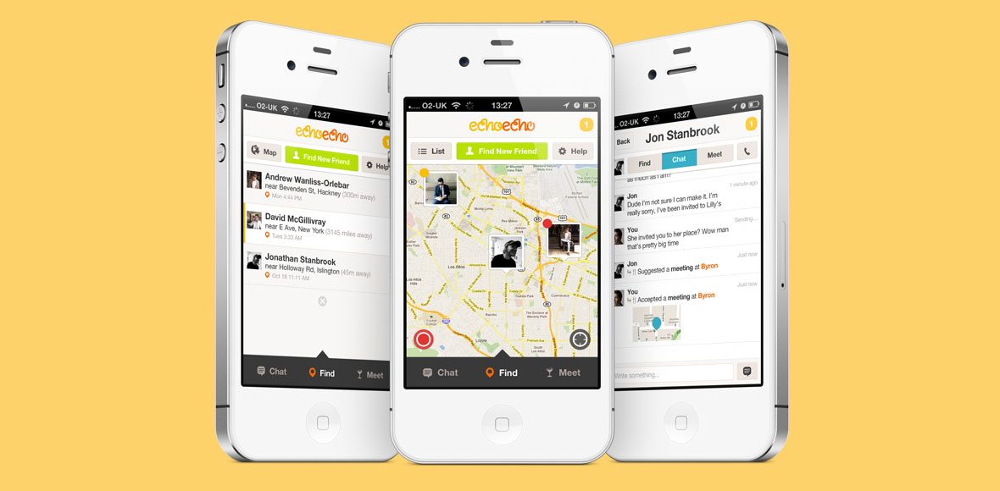

I worked as lead designer in a team spread London, LA and Maui. Backed by great investors including Google Ventures, echoecho had 300k users, was heavily featured in the press, and voted one of the BBC's Apps of the year.
Real life is complicated — your friends' get lost, plans
change and you're generally out and about when it happens.
We knew that usability and clarity were going to be central to
the success of the product.
Research and insights told us that it had to be easy to use on the go,
but also powerful enough to keep up with the shifting needs of every day life.
Clear, but not basic. We made sure of this by designing and testing
multiple versions with users.
To ensure users could find all of their friends,
it was key that we supported more than just the iPhone. This meant
the designing for Android, Blackberry, Nokia and Windows Phone
(working closely with Microsoft as a Windows Phone launch partner).
My work included product definition, user testing,
information architecture, wireframe development, prototyping,
and interface design. As an early employee in a fast moving
startup environment, I also designed advertising, web materials
and pitch decks.